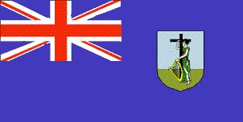

Monserrat
|  |
Información general
Nombre oficial: Montserrat
Área: 102 km²
División política:Territorio británico dependiente
Unidad monetaria: Dólares Caribe-Este
Idiomas: Inglés (oficial)
Gentilicio: de Montserrat
Curiosidades
La isla de Montserrat es volcánica.
Perfil Ecónomico
Perfil Demográfico
Población: 8.437 hab.
Densidad de población: 83 hab/km²
Perfil Cultural
Religión:
- Protestantes: 44,8%
- Anglicanos: 35,4%
- Católicos: 15,0%
- No religiosos: 2,0%
- Otros: 2,8%.
Sistema de Gobierno
Constitución vigente: 1904 (enmendada en 1940 y 1964)
Sistema ejecutivo: Gobernador (representante del monarca británico), Consejo Ejecutivo. Ministro Jefe.
Sistema legislativo: Consejo legislativo de doce miembros, siete elegidos por sufragio universal.
Sistema judicial: Corte Suprema del Caribe Este. Corte de Jurisdicción Primaria. Corte de Magistrado.
Aproximación histórica
La isla de Montserrat está situada al sudeste de Puerto Rico. La isla es volcánica y posee tres cadenas montañosas. La altura mayor es el Pico Chance con 914m.
Montserrat fue descubierta por Cristóbal Colón en 1493.
Los primeros colonos británicos llegaron en 1632, pero en 1664 Montserrat cae en poder de Francia de 1664 a 1668. Es en 1783 que finaliza la disputa por la isla y el Tratado de Versalles asegura el dominio británico.
En el período de 1958 a 1962 la isla se integra a la Federación del Caribe. Finalmente en 1967 la isla decide continuar su status colonial.
La economía de Montserrat depende del turismo, del cultivo de frutas y vegetales y de la cría de ganado.
«-- ir al comienzo
«-- regresar